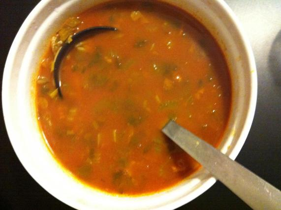

Chorba

Une soupe tunisienne traditionnelle et très facile à faire. C'est une soupe idéale quand il fait froid, ou quand on est enrhumé (surtout si vous l'aimez piquante !) De nombreuses variantes sont possibles.
Ingrédients :
2 côtelettes d'agneau
2 branches de céleri
2 poignées de petites pâtes
1 poignée de pois-chiche (trempés la veille)
1 petite gousse d'ail
2 c à s de sauce concentrée de tomates
1 c à s d'huile d'olive
De l'eau
Piment doux ou fort
4 épices
Du sel
Poivre
Préparation :
Étape 1 :
Couper les côtelettes en petits morceaux. Ecraser la gousse d'ail. Faire chauffer un fait-tout avec un peu d'huile d'olive, mettre l'ail, la viande, les épices, la sauce tomate. Mélanger et couvrir d'environ 1.5l d'eau.
Étape 2 :
Rincer et couper le céleri en petits morceaux et le mettre dans la casserole. Facultatif : Mettre les pois-chiches. Laisser cuire environ 40-45 minutes à feu moyen en surveillant et en ajoutant de l'eau si nécessaire.
Étape 3 :
Au bout de 45 minutes, la soupe est presque prête. Il ne manque plus que les petites pâtes : vermicelles, avoines, plombs, lettres, coquillettes... Laisser cuire encore le temps nécessaire pour les pâtes (ajouter de l'eau car les pâtes vont en absorber).
Étape 4 :
Lorsque les pâtes sont cuites, servir avec un filet de citron ! Bon appétit !